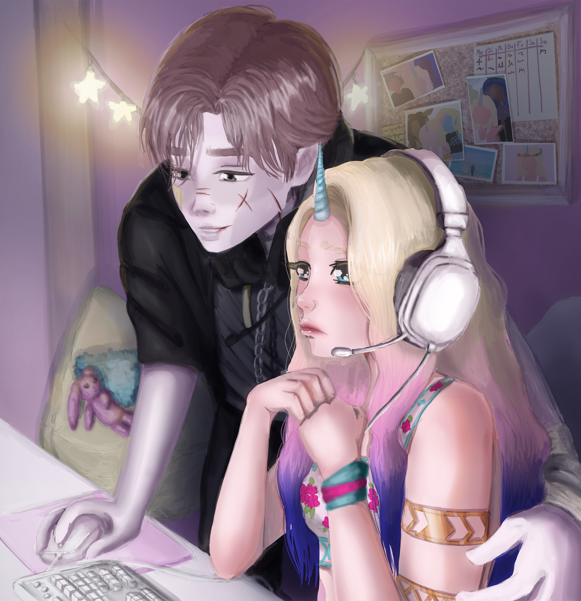
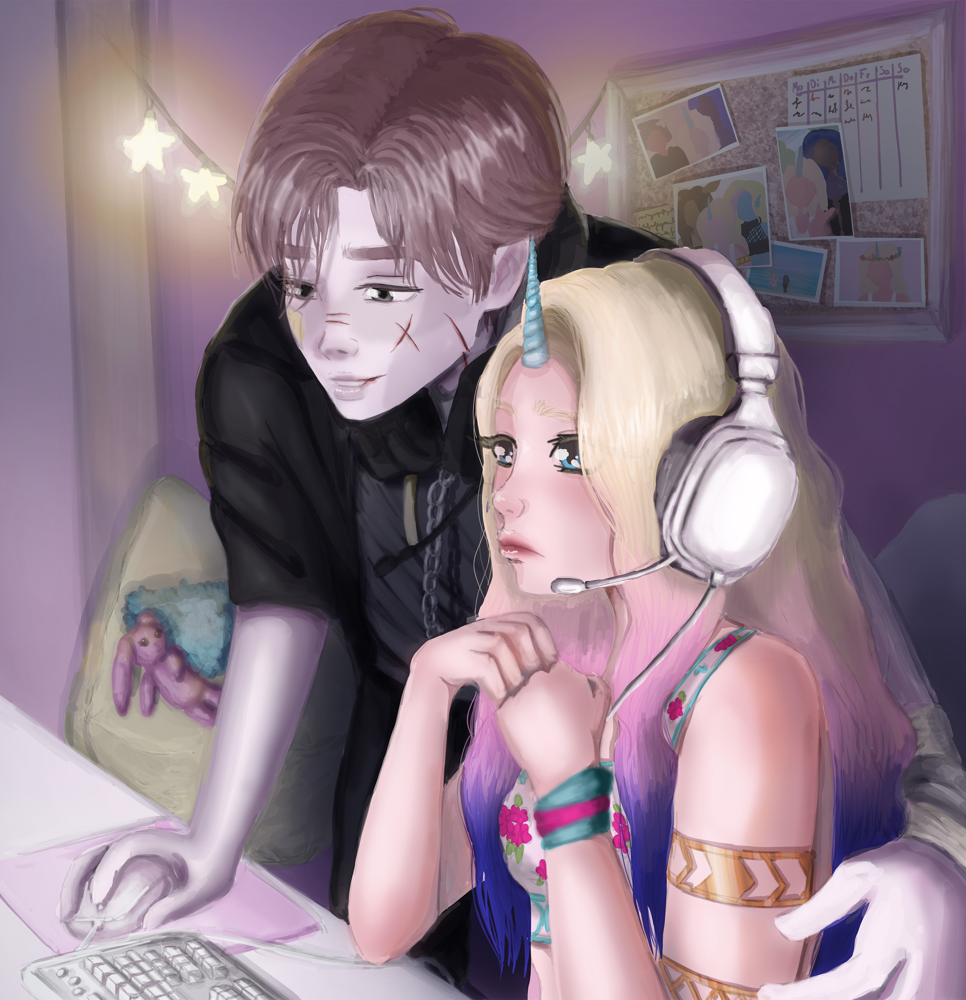

Personality & Core
Primary Values: Love, Peace & Freedom
Biggest Wish: Staying at Rebecca's Side
Biggest Fear: Losing someone dear
Greatest Strength: Naturally charismatic
Greatest Weakness: Gets lost in their own thoughts
Guilty Pleasure: Daydreaming about impossible adventures
Likes & Aesthetics
Likes: Everything in pink
Dislikes: Negativity
Favorite Color: Peach Pink
Favorite Food: Strawberry Cake, Strawberry Bubbletea with Boba perls
Laughs at: Silly jokes that make no sense
Cries because of: Feeling misunderstood
Angered by: Lack of appreciation
Relationships
Best Friend: Rebecca
Rival: /
Relationship Status: Single
Turn-ons: When someone makes you feel safe without trying
Turn-offs: Never saying thank you
Love Language: Quality Time
 

Attributes
- Age: 17
- Height: 1,59
- Specie: Unicorn
- Birthday: April 12
- Gender: female
- Sexuality: Demisexual
- MTBI: ESFP
- Zodiac: Aries
Backstory
She comes from the Rainbow Unicorn Royal House, which has been trying to wipe out races like tigers for a long time and is at war with other powerful beings. Even among unicorns, Louann was born with extraordinary abilities—specifically, the power of invisibility. As a child, she was primarily trained to control this unique power while also being taught that, as a woman, she should stay out of politics and obey her father. This was meant to ensure that she would one day fully master her abilities and become useful in the war. At the same time, she was promised to a unicorn man from the Frost Unicorn House, who was already in his thirties. Their union and the birth of heirs were meant to merge their houses, with the hope that their offspring would inherit their powerful abilities. However, Louann barely managed to escape using her invisibility powers. She wandered for several days, lost and alone, until she finally reached an academy and pleaded for entry.
What if they were a...
- ...Famous Athlete: Ice Skeating
- ...Idol: LeadDancer, Maknae
- ...Band Member: Keyboardist, Backup Vocalist
- ...Gamer: Sims or TomodachiLife Gamer
- ...Pet Owner: Cats